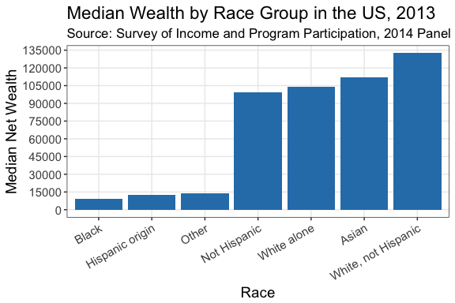
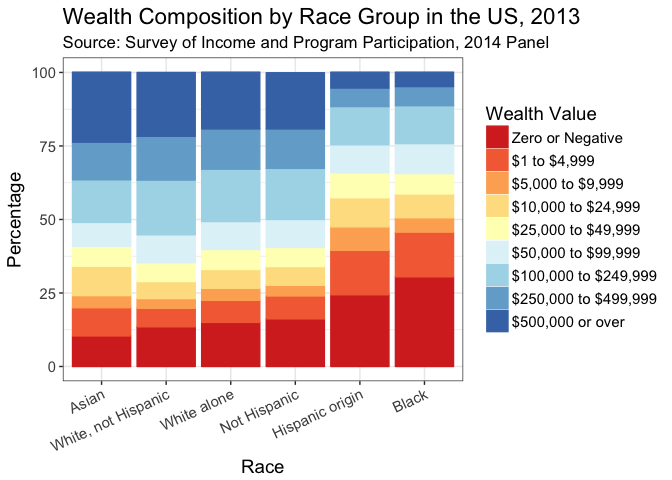

Race and Wealth Inequality in the USA
I’ve been interested in race and inequality (or “group inequality”) for some time (see the Background section. The recent publication of the 2013 Survey of Income and Participation presents a window into what wealth inequality looks like in the USA. What can we do with the survey data?
- We can construct a bar chart showing net wealth by race
- We can construct a stacked bar chart showing different wealth levels and the composition of those wealth levels by race group
- And a whole lot more that I’m not going to do here.
Getting the data
The data are available at the US Census Bureau’s website (praise be to the US government for having open and accessible data :+1: :pray: :hand:). To make my code more readily reproducible, I show you how to download the data directly within a code chunk. Notice that when you download the data, you specify a destination. As I have simply specified the file name, it will download the file to my current working directory.
download.file("https://www2.census.gov/programs-surveys/demo/tables/wealth/2013/wealth-asset-ownership/wealth-tables-2013.xlsx",
destfile = "wealth-tables-2013.xlsx",
method = "curl")Read the data into R
We now need to read the xlsx data file into R. I “cheated” a little bit by first opening the xlsx file and seeing what I wanted to import. The data from the Census Bureau is dreadfully untidy (see here if you need to get a sense of what makes for tidy data). But, the readlxl package, with the corresponding read_xlsx() function gets around this for us and we can import particular ranges of defined Excel sheets, as I do below (Wickham and Bryan 2017). Be sure to load the package with library(readxl) in your setup.
RaceIneq <- read_xlsx("wealth-tables-2013.xlsx",
sheet = 1, col_names = FALSE, range = "A7:B13")Bar chart of net wealth
We have to go through a few steps to get to our figure:
- Wrangle the data
- Use
ggplot()to produce the figure.
Wrangle the data
Having imported that data as an object, we can do some light data wrangling to get what we want out of the data frame with some naming and labeling of the variables. Below, I have simply re-labeled the factor
RaceIneq <-
RaceIneq %>%
rename(Race = X__1,
NetWealth = X__2) %>%
mutate(Race = factor(Race,
levels = c("White alone",
".White alone, not Hispanic",
"Black alone",
"Asian alone",
"Other (residual)",
"Hispanic origin (any race)",
"Not of Hispanic origin"),
labels = c("White alone",
"White, not Hispanic",
"Black",
"Asian",
"Other",
"Hispanic origin",
"Not Hispanic")))Now, we wish to find out how much net wealth each ethnic group has as a bard chart where the x-axis categories (the racial groups) are ordered by the level of net wealth.
WIneq <-
RaceIneq %>%
ggplot(aes(x = reorder(Race, NetWealth), y = NetWealth)) +
geom_bar(stat = "identity", fill = "#2c7fb8") +
xlab("Race") +
theme_bw() + #Remove default gray background
scale_y_continuous(name = "Median Net Wealth", breaks = seq(0, 140000, 15000)) +
theme(axis.text.x = element_text(angle = 30, hjust = 1), #Change x-axis label orientation
text = element_text(size = 14), #Change other text size
panel.grid.minor = element_blank()) + #Remove some gridlines for legibility
labs(title = "Median Wealth by Race Group in the US, 2013",
subtitle = "Source: Survey of Income and Program Participation, 2014 Panel")
WIneq
Stacked bar chart
We need to import a new object from a different sheet in the data.
RaceIneqT <- read_xlsx("wealth-tables-2013.xlsx", sheet = 4, col_names = TRUE, range = "A4:K13")Having done that, we need to repeat some of our initial data wrangling (using the previous data wrangling as the basis). Here are some other things I decided to do:
- I re-leveled the factor to reflect the order of the values for zero and negative wealth in the data table. I did this with the (relatively new)
forcatspackage (Wickham (2017)). - That is, Asians have the lowest zero and negative wealth relative to other populations and Africans have the highest.
- I also filtered the race variable to exclude “other” and “Total” as it doesn’t seem to me as those are particularly worth including as comparisons.
RaceIneqT <-
RaceIneqT %>%
rename(Race = X__1,
Observations = X__2) %>%
filter(complete.cases(.)) %>%
select(-Observations) %>%
mutate(Race = factor(Race,
levels = c("Total",
"White alone",
".White alone, not Hispanic",
"Black alone", "Asian alone",
"Other (residual)",
"Hispanic origin (any race)",
"Not of Hispanic origin"),
labels = c("Total",
"White alone",
"White, not Hispanic",
"Black",
"Asian",
"Other",
"Hispanic origin",
"Not Hispanic")))
WInN <-
RaceIneqT %>%
gather(Type, Value, -Race) %>%
mutate(Type = factor(Type,
levels = c("Zero or Negative",
"$1 to $4,999",
"$5,000 to $9,999",
"$10,000 to $24,999",
"$25,000 to $49,999",
"$50,000 to $99,999",
"$100,000 to $249,999",
"$250,000 to $499,999",
"$500,000 or over"
)
)
) %>%
filter(Race %in% c("White alone", "White, not Hispanic", "Black", "Asian", "Hispanic origin", "Not Hispanic")) %>%
mutate(Race = fct_relevel(Race, "Asian", "White, not Hispanic", "White alone", "Not Hispanic", "Hispanic origin", "Black"))Plotting the stacked bar chart
Now, we can use ggplot() to produce a stacked bar chart by category to produce a pretty informative figure. I love colorbrewer and I thought that a heatmap colorscheme would work for the plot, showing particularly what proportion of people were “in the red” (zero or negative wealth) and progressing from there to blue (higher wealth). Feel free to comment if you think otherwise.
WIneqBand <-
WInN %>%
ggplot(aes(x = Race, y = Value, color = Type, fill = Type, order = Type)) +
geom_bar(stat = "identity", position = position_stack(reverse = TRUE)) +
scale_fill_brewer(type = "div", palette = "RdYlBu", name = "Wealth Value") +
scale_color_brewer(type = "div", palette = "RdYlBu", name = "Wealth Value") +
ylab("Percentage") +
xlab("Race") +
theme_bw() +
theme(axis.text.x = element_text(angle = 25, hjust = 1),
text = element_text(size = 14)) +
labs(title = "Wealth Composition by Race Group in the US, 2013",
subtitle = "Source: Survey of Income and Program Participation, 2014 Panel")
WIneqBand
What can we deduce from this figure? Consistent with Hamilton et al. (2015), significant wealth inequality across race groups persists in the US. Hispanic/Latinx and Black Americans have significantly higher population proportions with zero or negative wealth relative to their White and Asian counterparts. I’m sure there’s a lot more to tease out in this data and I look forward to getting my students to play with it.
Background
Group inequality fascinates me both as a theoretical issue and as an empirical one. With respect to theory, challenging questions about segregation, preferences and inequality come out of the work of Thomas Schelling (see Schelling (2006 [1978])) and, more recently, Glenn Loury’s Anatomy of Racial Inequality (Loury (2009)). Bowles, Loury, and Sethi (2014) present a useful review of related work and demonstrate the challenges of overcoming existing group inequality. As an empirical question, work looking at differences in outcomes across race groups both in South Africa and in the US presents troubling patterns. For example, consider the work coming out of the Samuel DuBois Cook Center at Duke University led by Sandy Darity. Darity’s team shows us just how bad wealth inequality across different race groups in the USA: wealth inequality persists, regardless of income, education, and employment (see, e.g. Hamilton et al. (2015)). With respect to South Africa, feel free to look at my post checking the SAIRR’s work looking at data from South Africa on race and wealth inequality (the General Household Survey) and future posts I hope to do using data from the NIDS.
My personal interest derives from confronting inequality and poverty head-on while growing up in South Africa, supplemented by volunteering with TDL while attending the University of Cape Town, and later while working as the assistant project manager of the Quality of Life Survey at SALDRU. I’ll gladly discuss these and other issues if you contact me.
License

This work is licensed under a Creative Commons Attribution 4.0 International License.
References
Bowles, Samuel, Glenn C Loury, and Rajiv Sethi. 2014. “Group Inequality.” Journal of the European Economic Association 12 (1). Oxford University Press: 129–52.
Hamilton, Darrick, William Darity Jr, Anne E Price, Vishnu Sridharan, and Rebecca Tippett. 2015. “Umbrellas Don’t Make It Rain: Why Studying and Working Hard Isn’t Enough for Black Americans.” New York: The New School.
Loury, Glenn C. 2009. The Anatomy of Racial Inequality. Harvard University Press.
Schelling, Thomas C. 2006 [1978]. Micromotives and Macrobehavior. WW Norton & Company,
Wickham, Hadley. 2017. Forcats: Tools for Working with Categorical Variables (Factors). https://CRAN.R-project.org/package=forcats.
Wickham, Hadley, and Jennifer Bryan. 2017. Readxl: Read Excel Files. https://CRAN.R-project.org/package=readxl.